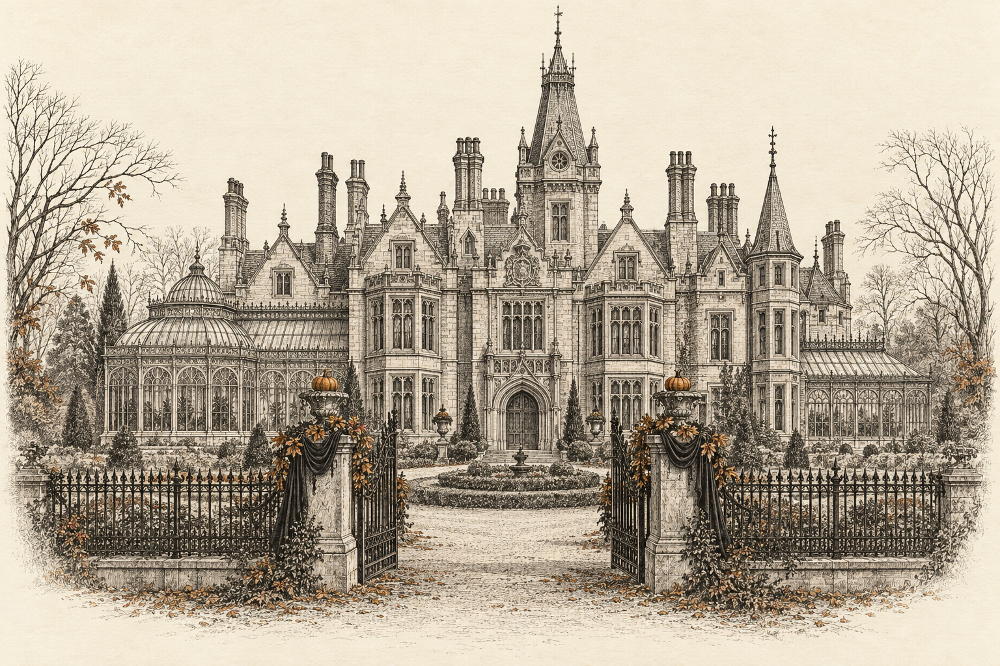
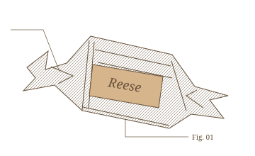

Notice of an ongoing inquiry
Subject H-31
Whereabouts presently unconfirmed.
A promising experiment.
An unsecured enclosure.
A regrettable loss of breakfast.
Dr. Elias Grimsby’s pursuit is recorded herein.
The investigation remains ongoing.

The window has since been brought to our attention.
Entry IX
On the nature of the ha-bah
American Tuesday, Nautical · At sea, somewhere beyond Bah-stn
Case register / H-31
The known particulars.
A satisfactory likeness
has yet to be obtained.
- Subject designation
- H-31, referred to as “Gary”
- Last reported sighting
- Maine, by telegram
- Reliable inducement
- Reese confections
- Attending researcher
- Dr. Elias Grimsby

One discarded confection wrapper.Recovered along the subject’s trail.
See Entry VI.
Field chart / The pursuit
Beyond the Institute.
Crossed circle: reported H-31 sighting. Arrival not yet documented.
Current circumstances: Aboard a steamship, bound for Maine.
The record, thus far
A most necessary paper trail.
- IA requirement for documentationThe Third Monday of October
- IIToday belongs to the ratOctober, the Following Tuesday, Provisionally
- IIIConcerning confectioneryThe Thirty-Second of September
- IVInstructions for JeffWednesday, by Laboratory Reckoning
- VMistakes were madeThe Morning Immediately Following a Thursday
- VIA breakfast, unaccounted forOctober the Somethingth
- VIIWho infests who?The Same Month, Following an Unscheduled Rat
- VIIIThe question of Bah-stnAmerican Tuesday
- IXOn the nature of the ha-bahAmerican Tuesday, Nautical
Further dispatches will be added as they reach the Institute.
The chronology is maintained by entry number. The dates are Dr. Grimsby’s responsibility.
An autumn notice to invited guests
Your presence is requested.
October 24, 2026 · Seven in the Evening
Covington, Kentucky
Costumes are not necessary.
The precise address will be provided privately.
Kindly confirm attendance with your host.
Please include your party size and any dietary requirements.
Upon arrival, the phrase is
“Today belongs to the rat.”